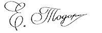

НЕЗАВИСИМА ФОНДАЦИЯ ЗА БОРБА СЪС СЛЕПОТАТА
СЛЕД 2 МЕСЕЦА ЩЕ ЗАБРАВИТЕ ЗА ПРОБЛЕМИТЕ СЪС ЗРЕНИЕТО И ЩЕ ВИДИТЕ КАКТО В МЛАДОСТТА: ЕФЕКТЪТ СЕ ПОТВЪРЖДАВА ОТ НЕЗАВИСИМИ НАУЧНИ ТЕСТОВЕ
Здравейте, аз съм Елин Тодоров, учен и специалист по офталмология. На тази страница искам да ви запозная с най-голямото постижение в живота ми, за което току-що бях номиниран за награда от американската общност на експертите по здраве на очите. Разработих метод, чрез който всеки може да възстанови загубената зрителна острота и да се отърве от най-често срещаните проблеми с очите само за 2 месеца.
НЕЗАВИСИМА ФОНДАЦИЯ ЗА БОРБА СЪС СЛЕПОТАТА
Затова, ако искате, БЕЗ химия и неефективни процедури:
- Да си върнете перфектното зрение – дори ако сте страдали от късогледство, далекогледство и други често срещани проблеми със зрението в продължение на много години;
- Да спрете свързано с възрастта намаляване на зрението за да виждат очите, както в младостта;
- Да премахнете симптомите на наследствени патологии на органите на зрението, дори ако всички ваши роднини са страдали от тях;
- Да елиминирате зачервяването и болката в очите, когато работите пред компютър и гледате телевизия;
- Да забравете за умората на очите и да ги поддържате здрави в продължение на много години;
- Да защитите очите от вредното въздействие на околната среда – по-точно от вредните лъчи на синия спектър на слънчевата светлина;
- Да възстановите зрението веднъж и завинаги, само за 2 месеца;
- И благодарение на това да живеете пълноценен живот, без да се страхувате от слепотата!
Трябва да знаете, че всичко това може да се постигне без опасни операции,
скъпо възстановяване, безкрайно чакане на опашка при специалисти (които също безпомощно се
предават...) и без гълтане на отровни химикали (вредни за черния дроб, стомаха и бъбреците)... и
накрая, да спестите хиляди лева. Ако искате да направите това, трябва да прочетете това, което
трябва да ви кажа.
Няма значение на колко години сте или колко дълго страдате от
проблеми със зрението. Няма значение какви симптоми имате: късогледство, далекогледство,
астигматизъм или катаракта. Дори ако ви е казано, че поради възрастта Ви промените в зрението са
необратими и трябва да се подготвите за пълна слепота... Трябва да знаете, че след 2 месеца ще
можете да се насладите на 100% здрави очи. На дълги години!
Вижте защо моят метод е алтернатива на неефективните методи за борба с намаленото зрение:
- Първият ефект от приемането на средството се забелязва след 21 дни, и след 2 месеца зрението се възстановява напълно;
- Това е безопасно за тялото: формулата се основава на естествени биоактивни съставки, така че не предизвиква странични ефекти или пристрастяване;
- Помага да се елиминират не само симптомите, но и причината за намаляване на зрението – липса на кръвоснабдяване и нестабилно функциониране на нервните влакна;
- Лесно се прилага, и всеки може да вземе курс за прием у дома, вместо да очаква среща за консултация със специалист;
- Това спестява хиляди евро вместо да ги харчите за химикали и скъпи и неефективни процедури.
НЕЗАВИСИМА ФОНДАЦИЯ ЗА БОРБА СЪС СЛЕПОТАТА
Разработих естествен метод, който помага за саморегенерацията на очните тъкани и възстановяването на зрението по естествен начин.
Благодарение на него ще забравите за очилата и скъпата и травматична
хирургична корекция на зрението. Всички проблеми, свързани с невъзможността да
видите редовете с текст във вестника или пътните знаци на улицата, ще останат в миналото. Ще
можете да работите и да се занимавате с домакински дела, без да прибягвате до външна помощ.
Най-накрая ще можете да направите всички неща, които досега не сте могли да направите поради
слабото зрение.
Да чете любимите си книги, етикети с цени в магазините, да се
разхождате привечер без страх, че няма да можете да намерите пътя към дома. И всичко това,
защото успях да разработя иновативна формула, която помага за възстановяване на зрението
напълно. Как съм го направил това?
Исках да спася майка ми от прогресивна слепота
Според последните проучвания на СЗО 2,2 милиарда души по света страдат от
зрителни увреждания. А 1,1 милиарда от тях са напълно слепи. И това въпреки факта, че 90% от
хората със загуба на зрение и слепота могат да бъдат подпомогнати - ако биха използвали
ефективни средства за борба с намаляване на зрението. Повечето от тях обаче използват остарели
методи, които са неефективни и скъпи.
За съжаление този проблем засегна и майка ми.
Отначало тя просто присвиваше очите, гледайки телевизионния екран, казваше, че всичко се
размазва пред очите й. Тогава тя не можеше да прочете състава на продуктите върху опаковката,
написан с дребен шрифт. Изписаха й очила, но майка постоянно ги губеше някъде. И се шегуваше, че
дори може да се движи из къщата на сляпо…
Но възникна заплаха за живота й!
Най-лошото беше, че намаленото зрение започна да заплашва живота й! Веднъж тя
сложи чаша горещ чай и не улучи масата и без да иска си опари ръцете. Но най-много ме порази
друг случай. Той ми послужи като сигнал, че е време да действам!
Никога няма да
забравя деня, в който чичо ми, който живее в друг град, ми се обади. Каза, че майка е набрала
номера му по погрешка, когато е искала да ми се обади. И каза, че умира…
Побързах към къщата на майка ми и я заварих в лошо състояние! Когато пристигна линейката,
се оказа, че майка ми погрешно е взела грешните хапчета за налягане, и получи много тежко
отравяне. Тя просто не можа да прочете името им на опаковката! Едва я спасиха…
Прекарах няколко дни в кошмар. Не беше ясно дали майката ще се възстанови от
отравянето. Когато се почувства по-добре, отидохме при специалист по офталмология. Единственото,
което той предложи, беше да направи операция. Той обаче не можеше да гарантира, че на нейната
възраст тя ще донесе осезаеми резултати. Да рискувам здравето на мама без гаранция, че
операцията ще помогне? Не, не бях съгласен на това!
Как измислих формула, която помага за възстановяване на зрението?
Трябваше да взема ситуацията в свои ръце. В крайна сметка толкова много исках
тя да може да живее пълноценен живот без опасност за здравето! Да работи в любимата си градина,
да се грижи за внуците си, да се среща с приятели в гостоприемния си дом. И всичко това без
външна помощ, без да се движи на сляпо. Тогава си помислих: „Човече, ти си учен! Участвал си в
откриването на много вещества, които се борят с различни заболявания. Защо да не направиш
продукт, който ще помогне да възстанови зрението на родната майка?“ Затова започнах да
изследвания...
Провеждах интензивни лабораторни тестове в продължение на една година.
Опитах различни комбинации от активни вещества. Искам да подчертая, че всички те бяха
100% натурални и безопасни за организма. Вдъхнових се от традиционните рецепти
и ги свързах с най-новите постижения в молекулярната биология. Научните познания, вярата в
природата и малко късмет бързо се изплатиха: измислих уникална макромолекулна формула.
Веднага започнах да изготвям документи за провеждане на мащабни тестове на моята формула. Неина,
98% ефективност е потвърдена от най-големите лабораторни центрове в САЩ! Още
във фазата на тестване, моята макромолекулна формула естествено помогна за възстановяване на
зрителната острота при хиляди доброволци.
Удивителен ефект
Майка ми започна да приема средството ми и след около 3 седмици каза, че
предметите са спрели да се замъгляват пред очите й и стават по-ясни. Това беше чудесен знак:
значи формулата ми работи! Но този резултат не беше достатъчен за мен и помолих майка ми да не
спира да приема капсулите. Ден след ден резултатите ставаха все по-добри и по-добри: главата й
спря да я боли, защото трябваше да си напряга очите, вглеждайки се в изображенията по
телевизията. Тогава тя каза, че вижда текста във вестника перфектно, дори без очила. Минаха само
2 месеца от началото на приемането на средството! Бях щастлив! Че най-накрая победих битката с
прогресивната слепота, разбрах, когато майка в магазина ми каза:
– Не, няма да взема
това мляко. Има твърде високо съдържание на мазнини и срокът на годност е на път да изтече.
Погледнах я с недоумение: буквите на етикета бяха много мънички, наистина ли можеше да ги
различи? И тогава мама каза със смях:
- Синко, ти направи чудо! Дори не мислех, че
някога зрението ми ще стане толкова остро, колкото когато бях млада. Ти си изработил
отлично средство, което помага да връща зрението! На колко хора искаш да помогнеш?
Представете си колко хора наоколо, възрастни като мен или по-млади, които страдат от загуба на
зрение!
Досега постепенното намаляване на
зрителната острота с възрастта беше нещо неизбежно. Днес, използвайки моята макромолекулна
формула, този процес може не само да се забави, но и да се победи.
Позволете ми да ви
обясня как точно работи моята супер ефективна формула за здрави стави. Този процес е доста
сложен, но ще се опитам да го обясня по начин, който не е много учен.
Помага за възстановяване на кръвоснабдяването в очите.
Зрителната функция зависи от адекватността на доставката на кислород и
хранителни вещества до клетките на окото. Тази роля се поема от съдовете и малките капиляри,
разположени в органите на зрението. Въпреки че очите не са голям орган, всички те са пронизани
от съдове, малки и големи. Така артериите на ретината захранват части от зрителния нерв и
ретината. Те се разделят на отделни клонове и образуват гъста мрежа от капиляри, захранващи
вътрешните слоеве на ретината и вътрешността на зрителния нерв. И тогава има мускулни артерии,
които осигуряват кръвоснабдяване на всички мускули на окото.
Ако кръвоносната система
работи като часовник, проблемите със рението не се появяват. И ако възникнат проблеми (например
поради продължително седене пред компютъра или поради отрицателното влияние на околната среда),
тогава тъканите на окото, наситени с полезни вещества и витамини, са в състояние да регенерират
и спрат тези проблеми. Но когато кръвообращението е нарушено, клетките на ретината, зрителния
нерв, очните мускули постепенно деградират.
Всъщност всички проблеми със зрението се
дължат на една единствена причина: недостатъчно кръвоснабдяване на органите на зрението.
Затова моята задача беше да съставя формула, която да помогне за възстановяване на
нормалното кръвоснабдяване на окото. След това ще се нормализира насищането с полезни
микроелементи и витамини на клетъчно ниво. В резултат на това клетките ще могат да се обновяват,
клетъчният метаболизъм ще се подобри, ще започне процесът на саморегенерация. Разработих
макромолекулярна формула за интензивна регенерация. Нарекох я .
Уникалната формула ви позволява незабавно да доставя полезни вещества в клетките на
зрителния орган и да стартира процеса на кръвоснабдяване на зрителните органи. След което
клетките на ретината, зрителните нерви и очните мускули започват процесите на обновяване
на зрението на клетъчно ниво. След това зрението може да се възстанови в
100% обем. Достатъчно е да се премине курс на прием в продължение на 2 месеца (и
забележимият ефект ще бъде след 21 дни от приема), за да се възстанови зрителната острота и да
се предотврати влошаването му в бъдеще. Възможно най-естествено и без странични ефекти!
НЕЗАВИСИМА ФОНДАЦИЯ ЗА БОРБА СЪС СЛЕПОТАТА
Защо моята макромолекулна формула се нарича „чудотворно средство за борба със зрителни проблеми от различен произход?“
ИМА ЕФЕКТИВНОСТ НАД 98% ПРИ ВЪЗСТАНОВЯВАНЕ НА НОРМАЛНОТО КРЪВООБРАЩЕНИЕ НА ОЧИТЕ И РЕГЕНЕРАЦИЯ НА ОРГАНИТЕ НА ЗРЕНИЕТО

ПРЕДИ
Миопия 12 диоптъра на фона на която започва да се развива катаракта
СЛЕД
След 2 месеца прием на курс с : зрението е напълно възстановено, няма симптоми на катаракта
Засега това може да изглежда като чудо. Това обаче е факт, който потвърждава случая на майка ми и 14 хиляди души, които вече са успели да възстановят здравите стави и гръбнака благодарение на моя метод. Освен това ефективността на макромолекулната формула беше без съмнение доказана американската лаборатория за зрение в Далас. Това е откритие от световен мащаб, което спечели признанието и възхищението на най-добрите специалисти в областта на ревматологията, ортопедията и неврологията. Продължавам да получавам признателни писма от хора, които ми благодарят, че са се отървали от слепотата; това е основната причина, поради която съм щастлив и горд от това откритие.
ИМА ЕФЕКТИВНОСТ НАД 98% ПРИ РЕГЕНЕРАЦИЯ НА ТЪКАНТА НА ОЧНИЯ АПАРАТ И ВЪЗСТАНОВЯВАНЕ НА ЗРИТЕЛНАТА ОСТРОТА
Всички ваши приятели и роднини, свикнали да ви виждат с очила или да се движите с на допир. Когато ви видят да четете свободно дори дребния шрифт, те със сигурност няма да повярват, че сте успели да постигнете такъв успех за 2 месеца!
НЕЗАВИСИМА ФОНДАЦИЯ ЗА БОРБА СЪС СЛЕПОТАТА
Искате ли да възстановите зрителната острота и да не се притеснявате от перспективата за предстоящо настъпване на тотална слепота?
Може да продължите да страдате от необходимостта да носите очила или да треперите от страх в началото на операцията на очите. Можете също така да унищожите здравето си с токсични химикали и да знаете, че те само ще забавят проблемите със зрението за кратко... Но защо, ако ви предлагам бърз, лесен и евтин начин, което ще ви помогне да възстановите предишното си зрение без всякакъв проблем? Необходими са ви само 2 месеца, за да завършите курса за прием с и да се присъедините към 14 000 доволни потребители на тези капсули, които вече са успели да победят възрастовите и наследствени проблеми със зрението и сега се радват на пълноценен живот без очила и лещи!
Не рискувате нищо!
Прилагайки , ще можете да помогнете на очите си да се възстановят само за 2 месеца. Освен това не рискувате нищо! Като световно постижение моята макромолекулна формула получи престижна тройна гаранция: оригиналност, качество и удовлетворение.
ГАРАНЦИЯ ЗА ТРОЙНО УДОВЛЕТВОРЕНИЕ
1. Гаранция за оригиналност: в макромолекулното средство
се използва формула, базирана на най-мощните вещества, която
помага за регенерирането на органите на зрението и ги предпазва от негативни външни влияния.
Ефективността му се потвърждава от тестове и сертификати. Това е иновативна формула, която е
получила одобрението от учени от различни държави. По този начин можете да сте сигурни, че ще
получите оригиналния продукт, достъпен само чрез този уебсайт.
2. 2. Гаранция
за качество: благодарение на усъвършенствания процес на производство на
макромолекулна формула, той отговаря на най-високите стандарти за качество. Като се има предвид
вашето здраве и благополучие, концентрацията на активните вещества е избрана по такъв начин, че
да е 100% безопасна за вашето здраве. Всичко това, за да се гарантира, че ефектите му отговарят
на вашите очаквания.
3. Гаранция за удовлетворение: многобройни
потребителски тестове потвърждават повишената ефективност на капсулите . Въз основа на тези резултати препаратът е признат от
специалисти по целия свят, които го препоръчват на своите пациенти. Те са убедени, че капсулите
ще ви помогнат значително да подобрите зрението си и да
предотвратите влошаването му, и то само за 2 месеца...
Забравете за дискомфорта, безпомощността, болките в очите, можете да възстановите зрението на орела само за 2 месеца по прост, безопасен и икономичен начин.
Големите фармацевтични компании в САЩ и Япония буквално се борят за патент за
моята макромолекулна формула. Когато го продам, средството ще бъде достъпно по целия
свят, но със сигурност на друга цена.
Преди това да се случи, реших да го
направя достъпен в България, като стартирах акция за продажба на на специална цена с 50% отстъпка. Всичко, за да
помогна на най-голям брой хора в родината ми да се отърват от проблемите със зрението веднъж и
завинаги.
Затова ви призовавам да се възползвате от тази възможност! Много е лесно да
направите поръчка в дисконтния клуб. Не е необходимо да изпращате пари или да плащате с карта,
за да получите . Всичко, което трябва да направите, е
да попълните формуляра, това ще отнеме по-малко от 2 минути. И след няколко дни
ще получите пратката, за която ще платите, след като я получите.
Благодаря за
отделеното време за четене на моята публикацията. Пожелавам ви добро здраве в новия живот, в
който ще се наслаждавате на възможността да виждате всичко, отблизо и далеч...
Само за 2 месеца ще можете да четете, гледате телевизия, без да присвивате очите, да шиете и
пазарувате, без да се налага да носите очила!
С уважение, Елин Тодоров
